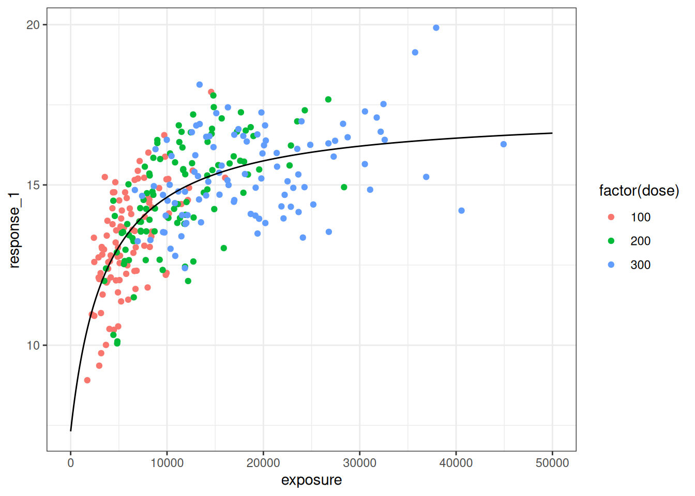
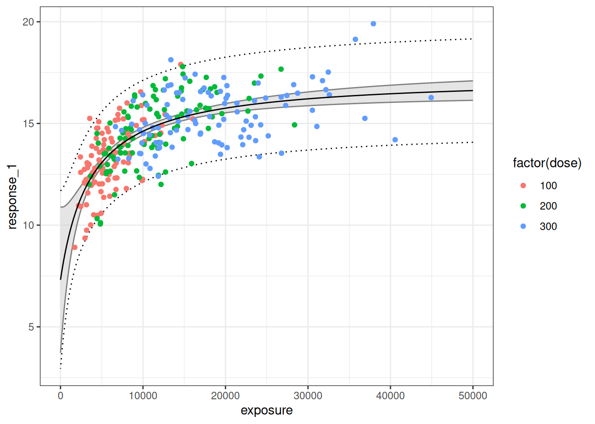

![]()
library(ggplot2)
library(tibble)
library(dplyr)The toy data set:
dat <- BayesERtools::d_sim_emax
dat# A tibble: 300 × 9
dose exposure response_1 response_2 cnt_a cnt_b cnt_c bin_d bin_e
<dbl> <dbl> <dbl> <dbl> <dbl> <dbl> <dbl> <dbl> <dbl>
1 100 4151. 12.8 1 5.71 2.33 7.83 0 1
2 100 8067. 14.6 1 4.92 4.66 6.74 1 1
3 100 4878. 12.8 1 4.88 4.21 4.68 1 1
4 100 9713. 16.6 1 8.42 6.56 1.29 0 1
5 100 11491. 14.4 0 4.37 3.96 3.55 0 1
6 100 2452. 12.6 1 8.69 7.60 3.64 0 0
7 100 5652. 14.8 1 6.61 3.95 5.13 0 0
8 100 9939. 15.2 1 5.35 7.77 8.29 0 1
9 100 5817. 14.6 0 5.61 2.24 9.60 0 1
10 100 5176. 13.7 1 6.06 1.79 8.74 0 1
# ℹ 290 more rowsMinimal implementation with nls()
mod <- nls(
formula = response_1 ~ E0 + Emax * exposure / (exposure + EC50),
data = dat,
start = c(E0 = 5, Emax = 10, EC50 = 4000),
algorithm = "port",
lower = c(E0 = -Inf, Emax = -Inf, EC50 = 0),
upper = c(E0 = Inf, Emax = Inf, EC50 = 20000)
)
summary(mod)
Formula: response_1 ~ E0 + Emax * exposure/(exposure + EC50)
Parameters:
Estimate Std. Error t value Pr(>|t|)
E0 7.313 1.825 4.008 7.76e-05 ***
Emax 9.986 1.534 6.512 3.16e-10 ***
EC50 3672.285 1488.397 2.467 0.0142 *
---
Signif. codes: 0 '***' 0.001 '**' 0.01 '*' 0.05 '.' 0.1 ' ' 1
Residual standard error: 1.269 on 297 degrees of freedom
Algorithm "port", convergence message: relative convergence (4)Extract predictions:
pred <- tibble(
exposure = seq(0, 50000, by = 100),
pred = predict(mod, newdata = tibble(exposure = exposure))
)
pred# A tibble: 501 × 2
exposure pred
<dbl> <dbl>
1 0 7.31
2 100 7.58
3 200 7.83
4 300 8.07
5 400 8.29
6 500 8.51
7 600 8.72
8 700 8.91
9 800 9.10
10 900 9.28
# ℹ 491 more rowsPlot predictions
ggplot() +
geom_point(
data = dat,
mapping = aes(exposure, response_1, color = factor(dose)),
) +
geom_path(
data = pred,
mapping = aes(exposure, pred)
) +
theme_bw()
A better approach:
pred_ci <- investr::predFit(
object = mod,
newdata = tibble(exposure = pred$exposure),
interval = "confidence",
level = 0.95
) |>
as_tibble() |>
select(ci_lower = lwr, ci_upper = upr)
pred_pi <- investr::predFit(
object = mod,
newdata = tibble(exposure = pred$exposure),
interval = "prediction",
level = 0.95
) |>
as_tibble() |>
select(pi_lower = lwr, pi_upper = upr)
pred_all <- bind_cols(pred, pred_ci, pred_pi)
pred_all# A tibble: 501 × 6
exposure pred ci_lower ci_upper pi_lower pi_upper
<dbl> <dbl> <dbl> <dbl> <dbl> <dbl>
1 0 7.31 3.72 10.9 2.94 11.7
2 100 7.58 4.27 10.9 3.43 11.7
3 200 7.83 4.77 10.9 3.88 11.8
4 300 8.07 5.24 10.9 4.30 11.8
5 400 8.29 5.68 10.9 4.68 11.9
6 500 8.51 6.09 10.9 5.03 12.0
7 600 8.72 6.47 11.0 5.36 12.1
8 700 8.91 6.83 11.0 5.66 12.2
9 800 9.10 7.17 11.0 5.94 12.3
10 900 9.28 7.49 11.1 6.21 12.4
# ℹ 491 more rowsAnd as a plot:
ggplot() +
geom_ribbon(
data = pred_all,
mapping = aes(exposure, ymin = ci_lower, ymax = ci_upper),
color = "grey50",
fill = "grey80",
alpha = 0.5
) +
geom_ribbon(
data = pred_all,
mapping = aes(exposure, ymin = pi_lower, ymax = pi_upper),
linetype = "dotted",
color = "black",
fill = NA
) +
geom_point(
data = dat,
mapping = aes(exposure, response_1, color = factor(dose)),
) +
geom_path(
data = pred_all,
mapping = aes(exposure, pred)
) +
theme_bw()
Reuse
Citation
BibTeX citation:
@online{navarro2025,
author = {Navarro, Danielle},
title = {Yet Another {Emax} Regression Post},
date = {2025-06-23},
url = {https://blog.djnavarro.net/posts/2025-06-23_nls-emax/},
langid = {en}
}
For attribution, please cite this work as: